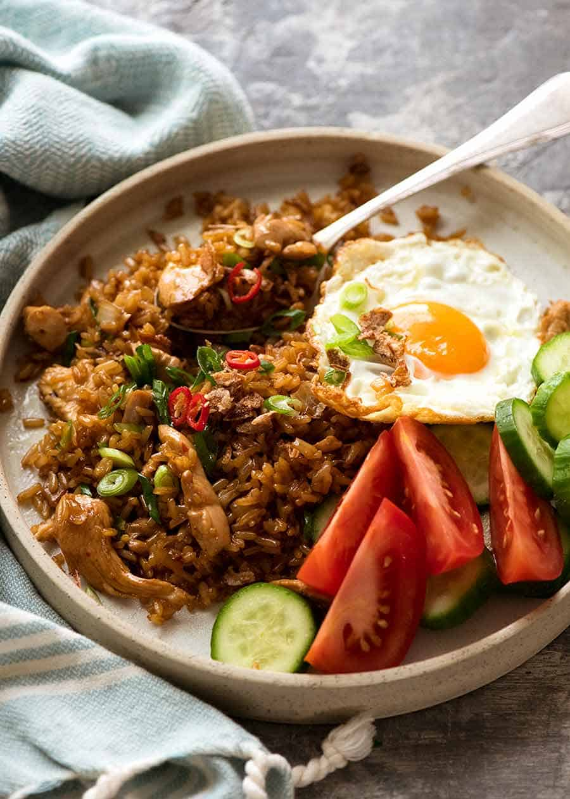

Nasi Goreng

Description
The literal translation of Nasi Goreng is
“fried rice” in Indonesian and Malaysian
– and that’s exactly what it is! It’s mainly
rice with just a little bit of meat and
just onion for the vegetables. The thing
that distinguishes it from other Fried Rice
dishes is the sauce which is made with kecap manis,
a sweet soy sauce that stains the rice dark brown
and caramelises the rice when it cooks.
Typically it’s served with a sunny side up egg
(love how the yolk runs into the rice!) and a
side of fresh cucumber and tomato (no dressing)
to make a meal of it.
I love how much of a comfort food it is to me;
it reminds of sitting around the table with
my family eating a savory, cozy home-cooked meal!
It’s a simple recipe, you won’t
need to hunt down any unusual ingredients, and
it’s one of my favourite Indonesian foods. I hope
you enjoy!
Ingredients
- Chicken
- 1 tbsp oil
- 5 oz / 150g chicken breast, thinly sliced (or other protein)
- 1 tbsp kecap manis (sweet soy sauce)
- Rice
- 1.5 tbsp oil
- 2 garlic cloves, finely chopped
- 1 tsp red chilli, finely chopped
- 1 onion, small, diced
- 3 cups cooked white rice, day old, cold
- 2 tbsp kecap manis (sweet soy sauce)
- 2 tsp shrimp paste, optional (I'm allergic to shrimp, so I don't)
- Garnishes/Side Servings (Optional)
- 4 eggs, fried to taste
- 1 green onion, sliced
- Tomatoes and cucumbers, cut into wedges/chunks
- Fried shallots, store bought (optional)
- Lime wedges
Steps
- Heat oil in a large skillet or wok over high heat.
- Add chilli and garlic, stir for 10 seconds.
- Add onion, cook for 1 minute.
- Add chicken, cook until it mostly turns white,
then add 1 tbsp kecap manis and cook for a further
1 minute or until chicken is mostly cooked through
and a bit caramelised.
- Add rice, 2 tbsp kecap manis and shrimp paste,
if using. Cook, stirring constantly, for 2 minutes
until sauce reduces down and rice grains start to
caramelise (key for flavour!).
- Serve, garnished with garnishes of choice
(green onions, red chilli, fried shallots).
- Serve as a side for Asian main dishes or as part of a
large spread, Asian or not!
Make it a meal traditional Indoesian Style! Serve with
a fried egg sunny side up (runny yolk), tomato wedges
and slices of cucumber on the side.
Recipe Notes
Kecap Manis(sometimes called Ketjap Manis)
is an Indonesian sweet soy sauce that is thicker than other
soy sauces. Sometimes just labelled as "sweet soy sauce".
Consistency resembles maple syrup, available in most
supermarkets in Australia.
Also easy to make your own!
Just combine 1/4 cup ordinary soy sauce (I use Kikkoman)
and 1/4 cup brown sugar over medium heat. Bring to a simmer
and reduce until it becomes a maple syrup consistency. It
will thicken more when it cools.